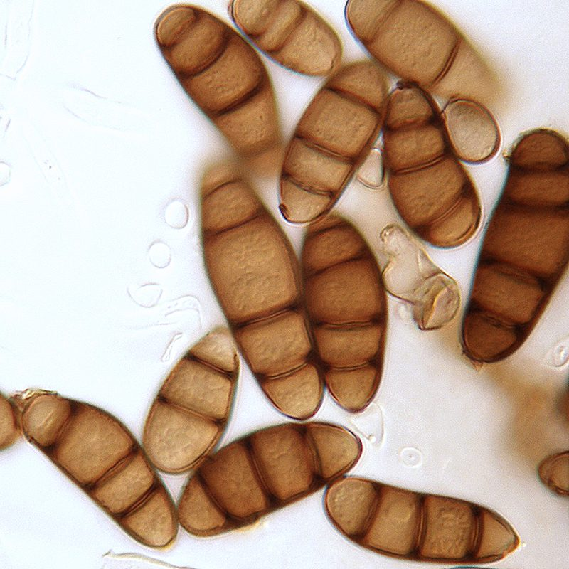

कर्वुलेरिया धब्बाCurvularia Leaf Spot
Curvularia lunata · Pleosporaceae · FNG-0036

- Scientific name वैज्ञानिक नाम
- Curvularia lunata (Wakker) Boedijn
- Family कुल
- Pleosporaceae
- Hindi हिंदी
- कर्वुलेरिया धब्बा
- Local names स्थानीय नाम
- curvularia, curvularia dhabba, leaf spot
- Status here यहाँ की स्थिति
- native
- Movement आवागमन
- Resident, here all year
- Known from कहाँ दर्ज
- Others have published records from the wider Awadh–Purvanchal plain, none yet from Basti–Ayodhya अवध–पूर्वांचल से दूसरों के प्रकाशित अभिलेख, बस्ती–अयोध्या से अभी नहीं
- IUCN IUCN
- not evaluated
- Review समीक्षा
- audited and independently read
When to look कब देखें
Expected mainly in August, September, October, February, March. मुख्यतः अगस्त, सितंबर, अक्टूबर, फ़रवरी, मार्च में अपेक्षित।
कर्वुलेरिया धब्बा / Curvularia Leaf Spot
Curvularia lunata (Wakker) Boedijn — Pleosporaceae
कर्वुलेरिया धब्बा — धान की पत्तियों पर या दालों पर काले-भूरे, अर्धचंद्राकार धब्बे जो अगस्त-सितंबर में (धान) या फरवरी-मार्च में (दालें) दिखते हैं। इस कवक का नाम इसके मुड़े हुए (curved) बीजाणुओं से आया है। ये धब्बे फसल के पोषण क्षेत्र को कम कर देते हैं, जिससे दानों का भरना कम हो जाता है। यह एक साधारण बीमारी है जो अक्सर हल्के में ली जाती है, लेकिन गंभीर संक्रमण में 10–15 प्रतिशत नुकसान हो सकता है।
Quick Identification त्वरित पहचान
| Feature | Description |
|---|---|
| Lesion shape | Circular to oval or slightly curved (crescent-shaped); 2–6 mm diameter |
| Lesion color | Dark brown to black center with a lighter brown halo; sometimes concentric rings |
| Spot pattern | Scattered on leaf surface; may coalesce in heavy infections |
| Halo color | Tan to reddish-brown halo surrounding the dark center |
| Spore color | Dark brown to black spores visible with hand lens as tiny dust on lesion |
| Leaf damage | Yellowing and premature senescence in heavy infections |
Field tip: Examine rice or pulse leaves in August–September (rice) or February–March (pulses). Look for circular to slightly curved dark spots with lighter halos. If you rub the spot, a dark dust (spores) comes off on your finger.
हिंदी — कैसे पहचानें: पत्ती पर गोल, काले-भूरे निशान। निशान थोड़ा टेढ़ा हो सकता है। पीली परत चारों तरफ़। अगस्त-सितंबर में (धान) या फरवरी-मार्च (दालें)।
Morphology and Symptomatology आकृति और लक्षण
Fungal structures (visible with microscope):
| Structure | Appearance |
|---|---|
| Conidiophore | Brown, septate, straight or slightly curved |
| Conidium (spore) | Curved (crescent or lunate), dark brown, 3–7 septate, 20–35 × 8–12 µm; central cells often bulging |
| Lesion tissue | Necrotic; mycelium visible as dark network in collapsed cells |
Disease progression:
- Infection: Spores land on leaf and germinate; mycelium enters through stomata or directly penetrates cuticle
- Colonization: Grows in mesophyll tissue; produces toxins causing necrosis
- Sporulation: 5–7 days post-infection; conidiophores emerge and produce spores
- Secondary infection: Spores are windborne; secondary infections spread rapidly in humid conditions
Life Cycle / Phenology जीवन चक्र
In eastern UP:
| Stage / Month | Event | Notes |
|---|---|---|
| August–October (rice) | Rice crop grows in monsoon conditions; high humidity favors infection | Disease progresses rapidly in flooded paddies |
| February–March (pulses) | Pulse crops near maturity; cool, moist weather optimal for sporulation | Peak disease period; secondary infections accumulate |
| Throughout year | Inoculum persists in crop debris and in air (spores); fungus survives as mycelium in plant material | Multiple hosts support year-round pathogen survival |
Ecology and Substrate पारिस्थितिकी और आधार
Plant pathogen: Curvularia lunata is a facultative pathogen with wide host range.
Moisture and temperature requirements:
- Optimal infection: 20–25°C, high humidity
- Rapid sporulation: 22–25°C with wet leaves; spores are windborne
- Stress to fungus: >28°C slows growth; dry conditions inhibit spore germination
- Survival: Mycelium survives in crop debris; spores do not survive extended desiccation
Host range: Highly polyphagous; infects rice, wheat, maize, pulses, and many other crops and weeds.
Transmission:
- Primary: Spores from previous season's crop debris or from soil
- Secondary: Windborne spores; require leaf wetness for infection
- Inoculum source: Infected crop residue and soil
Agricultural / Human Relevance कृषि प्रासंगिकता
Economic impact:
- Yield loss: can be heavy in a bad season, depending on variety, timing and weather.
- Severity: Higher in monsoon-grown rice than in winter pulses
- Minor pathogen: Often overlooked but can cause significant losses in combination with other diseases
Management — in order of priority:
- Field sanitation:
- Remove infected crop residue after harvest
- Deep ploughing to bury residue
- Resistant varieties (SOME AVAILABLE):
- Rice: use varieties with moderate resistance
- Pulses: limited resistant varieties; manage culturally
- Fungicide spray (SUPPLEMENTARY):
- Spray timing: Monitor in August–September (rice) or February–March (pulses); seek advice from the Krishi Vigyan Kendra once symptoms are spreading
- Fungicide choice: Carbendazim or Mancozeb
- Cost: ₹300–400 per hectare
- Cultural practices:
- Plant spacing to reduce humidity
- Avoid excessive nitrogen
हिंदी — रोकथाम: पुरानी पराली निकालो। पेड़ों के बीच जगह छोड़ो। अगर संक्रमण गंभीर हो तो छिड़काव करो।
Expected Locally स्थानीय रूप से अपेक्षित
Not a field record. Written from published accounts for eastern Uttar Pradesh. No confirmed local sighting yet — if you have seen it, that is what the atlas needs.
अभी तक स्थानीय पुष्टि नहीं। यह विवरण प्रकाशित स्रोतों से है, किसी अवलोकन से नहीं।
Curvularia leaf spot is expected in Basti and Ayodhya districts in rice fields during the monsoon and in pulse fields in winter. Disease severity depends on moisture and inoculum levels. GBIF holds published records from the wider Awadh–Purvanchal plain.
Distribution वितरण
Global range: Found in tropical and subtropical regions worldwide.
In India: Present in all rice- and pulse-growing regions.
In Uttar Pradesh: Common in all rice- and pulse-growing districts; eastern UP experiences consistent incidence due to monsoon rains and winter humidity.
In Basti district / eastern UP: Expected in rice and pulse fields; severity variable depending on weather.
Research Questions शोध प्रश्न
- In your village, what percentage of rice or pulse leaves show Curvularia spots during the peak season? — Examine 20 plants per field; count affected leaves.
- Do rice varieties differ in susceptibility to Curvularia leaf spot? — Compare symptoms across varieties in the same field.
- Does crop rotation with a non-susceptible crop reduce Curvularia incidence in the next season? — Monitor a rotated field vs. continuous rice/pulse cultivation.
Similar Species मिलती-जुलती प्रजातियाँ
| Disease | How to tell apart | हिंदी |
|---|---|---|
| Alternaria Leaf Spot | Concentric rings (target pattern); larger spots (5–10 mm) | बड़े निशान, वलय |
| Cercospora Leaf Spot | Circular spots with distinct grey halo; smaller (2–4 mm) | छोटे निशान, हल्की परत |
Field rule: Curved or slightly oval dark spots on rice or pulse leaves in monsoon (rice) or winter (pulses) = Curvularia.
Taxonomy & Classification वर्गीकरण
Original description. Originally described as Helminthosporium lunatum by Wakker; transferred to Curvularia by Boedijn in 1933.
Subspecies. No subspecies recognized.
Family and order placement. Order Pleosporales, family Pleosporaceae. Curvularia is a genus of plant-pathogenic fungi.
Phylogenetic notes. Curvularia lunata is one of several Curvularia species; recent molecular work has clarified species relationships.
IUCN status rationale. Not evaluated. As a facultative plant pathogen, its conservation status is not applicable.
Photo Gallery फोटो गैलरी
Photos needed आवश्यक फोटो
- [ ] Rice or pulse leaf with Curvularia spots (पत्ती पर काले निशान)
- [ ] Close-up of lesion showing dark center and halo (निशान का बड़ा रूप)
No photos yet — add field photos to media/species/curvularia_leaf_spot/ and run node scripts/sync_photos.js.
References संदर्भ
- Wakker, J.H. (1883). Jaarboek van het Proefstation voor Suiker-riet 1: 25. [original description as Helminthosporium lunatum]
- Boedijn, K.B. (1933). The genus Curvularia. Bulletin of the Botanical Garden, Buitenzorg 13: 249–293. [genus Curvularia]
- Indian Council of Agricultural Research — Directorate of Rice Research (2020). Rice Disease Management. ICAR-DRR, Cuttack.
- National Institute of Plant Health Management (2019). Leaf Spot Disease Management. NIPM, Hyderabad.
- GBIF Occurrence Data — Curvularia lunata, India (2026).
- Agrios, G. N. (2005). Plant Pathology. 5th ed. Academic Press, Burlington.
Source file: species/fungi/molds/curvularia_leaf_spot.md